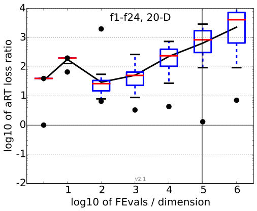
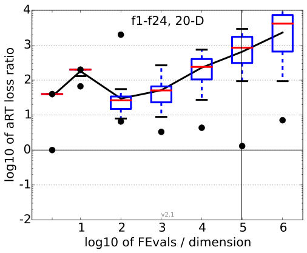

All functions in 5-D and 20-D
f1–f24 in 5-D, maxFE/D=1.20e6
| #FEs/D | best | 10 % | 25 % | med | 75 % | 90 % |
|---|---|---|---|---|---|---|
| RLUS/D | 2e5 | 1e6 | 1e6 | 1e6 | 1e6 | 1e6 |
| 2 | 10 | 10 | 10 | 10 | 10 | 10 |
| 10 | 50 | 50 | 50 | 50 | 50 | 50 |
| 100 | 7.0 | 8.8 | 14 | 21 | 38 | 5.0e2 |
| 1e3 | 12 | 41 | 68 | 1.2e2 | 2.0e2 | 9.5e2 |
| 1e4 | 51 | 1.4e2 | 2.6e2 | 5.2e2 | 8.7e2 | 2.4e3 |
| 1e5 | 3.0e2 | 3.1e2 | 9.7e2 | 2.0e3 | 5.0e3 | 1.0e4 |
| 1e6 | 3.8e2 | 1.2e3 | 2.3e3 | 3.1e3 | 1.6e4 | 3.2e4 |
| 1e7 | 3.7e2 | 9.5e2 | 2.6e3 | 1.0e4 | 8.6e4 | 1.5e5 |
f1–f24 in 20-D, maxFE/D=1.19e6
| #FEs/D | best | 10 % | 25 % | med | 75 % | 90 % |
|---|---|---|---|---|---|---|
| RLUS/D | 5e5 | 9e5 | 1e6 | 1e6 | 1e6 | 1e6 |
| 2 | 1.0 | 40 | 40 | 40 | 40 | 40 |
| 10 | 2.0e2 | 2.0e2 | 2.0e2 | 2.0e2 | 2.0e2 | 2.0e2 |
| 100 | 17 | 30 | 46 | 65 | 98 | 2.0e3 |
| 1e3 | 66 | 78 | 1.2e2 | 2.1e2 | 2.9e2 | 2.6e3 |
| 1e4 | 79 | 1.6e2 | 3.8e2 | 6.2e2 | 1.2e3 | 2.5e4 |
| 1e5 | 43 | 2.6e2 | 1.3e3 | 3.5e3 | 5.2e3 | 1.2e4 |
| 1e6 | 1.2e2 | 2.5e3 | 3.7e3 | 1.2e4 | 3.2e4 | 9.3e4 |
| 1e7 | 1.8e2 | 7.4e3 | 2.3e4 | 6.8e4 | 2.3e5 | 7.9e5 |
Separable functions in 5-D and 20-D
Misc. moderate functions in 5-D and 20-D
Ill-conditioned functions in 5-D and 20-D
Multi-modal functions in 5-D and 20-D
Weak structure functions in 5-D and 20-D
aRT loss ratios (see the previous figure for details). Each cross (+) represents a single function, the line is the geometric mean.
{kind=link}
{kind=link}
{kind=link}
{kind=link}
{kind=link}
{kind=link}
{kind=link}
{kind=link}
{kind=link}
{kind=link}